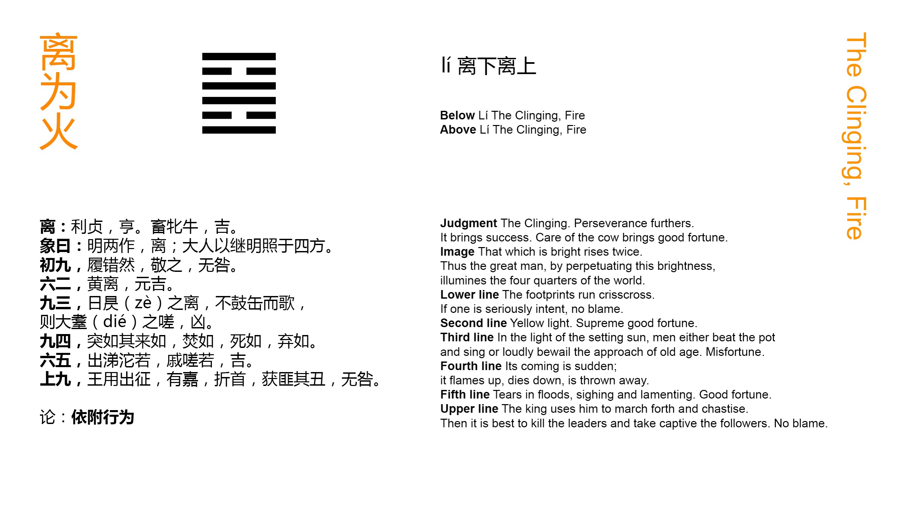

Chinese: 离 ䷝ lí

Lí ䷝ indicates that, (in regard to what it denotes), it will be advantageous to be firm and correct, and that thus there will be free course and success.
Let (its subject) also nourish (a docility like that of) the cow, and there will be good fortune.
1. The first NINE, undivided, shows one ready to move with confused steps. But he treads at the same time reverently, and there will be no mistake.
䷝ changing to ䷷
Matching Line 1 in Adjacent Hexagram: ䷜
2. The second SIX, divided, shows its subject in his place in yellow. There will be great good fortune.
䷝ changing to ䷍
Matching Line 2 in Adjacent Hexagram: ䷜
3. The third NINE, undivided, shows its subject in a position like that of the declining sun. Instead of playing on his instrument of earthenware, and singing to it, he utters the groans of an old man of eighty. There will be evil.
䷝ changing to ䷔
Matching Line 3 in Adjacent Hexagram: ䷜
4. The fourth NINE, undivided, shows the manner of its subject's coming. How abrupt it is, as with fire, with death, to be rejected (by all)!
䷝ changing to ䷕
Matching Line 4 in Adjacent Hexagram: ䷜
5. The fifth SIX, divided, shows its subject as one with tears flowing in torrents, and groaning in sorrow. There will be good fortune.
䷝ changing to ䷌
Matching Line 5 in Adjacent Hexagram: ䷜
6. The topmost NINE, undivided, shows the king employing its subject in his punitive expeditions. Achieving admirable (merit), he breaks (only) the chiefs (of the rebels). Where his prisoners were not their associates, he does not punish. There will be no error.
䷝ changing to ䷶
Matching Line 6 in Adjacent Hexagram: ䷜
p. 121 Lí ䷝ is the name of the trigram representing fire and light, and the sun as the source of both of these. Its virtue or attribute is brightness, and by a natural metaphor intelligence. But Lí ䷝ has also the meaning of inhering in, or adhering to, being attached to. Both these significations occur in connexion with the hexagram, and make it difficult to determine what was the subject of it in the minds of the authors. If we take the whole figure as expressing the subject, we have, as in the treatise on the Tuàn, 'a double brightness,' a phrase which is understood to denominate the ruler. If we take the two central lines as indicating the subject, we have weakness, dwelling with strength above and below. In either case there are required from the subject a strict adherence to what is correct, and a docile humility. On the second member of the Tuàn Guǎn Zǐ says: -- 'The nature of the ox is docile, and that of the cow is much more so. The subject of the hexagram adhering closely to p. 122 what is correct, he must be able to act in obedience to it, as docile as a cow, and then there will be good fortune.'
Line 1 is strong, and at the bottom of the trigram for fire, the nature of which is to ascend. Its subject therefore will move upwards, and is in danger of doing so coarsely and vehemently. But the lowest line has hardly entered into the action of the figure, and this consideration operates to make him reverently careful of his movements; and there is no error.
Line 2 is weak, and occupies the centre. Yellow is one of the five correct colours, and here symbolises the correct course to which the subject of the line adheres.
Line 3 is at the top of the lower trigram, whose light may be considered exhausted, and suggests the symbol of the declining sun. The subject of the line should accept the position, and resign himself to the ordinary amusements which are mentioned, but he groans and mourns instead. His strength interferes with the lowly contentment which he should cherish.
The. strength of line 4, and its being in an even place, make its subject appear in this unseemly manner, disastrous to himself.
Line 5 is in the place of honour, and central. But it is weak; as is its correlate. Its position between the strong 4 and 6 fills its subject with anxiety and apprehension, that express themselves as is described. But such demonstrations are a proof of his inward adherence to right and his humility. There will be good fortune.
Line 6, strong and at the top of the figure, has the intelligence denoted by its trigrams in the highest degree, and his own proper vigour. Through these his achievements are great, but his generous consideration is equally conspicuous, and he falls into no error.